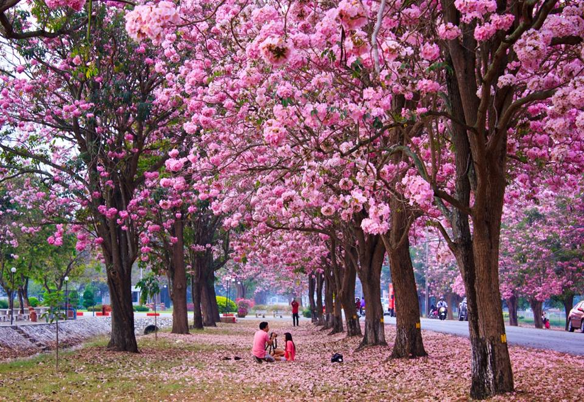
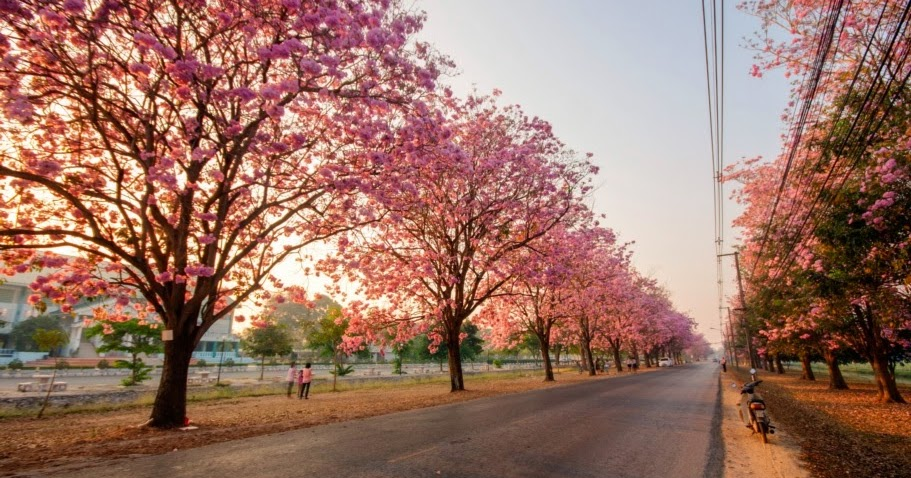
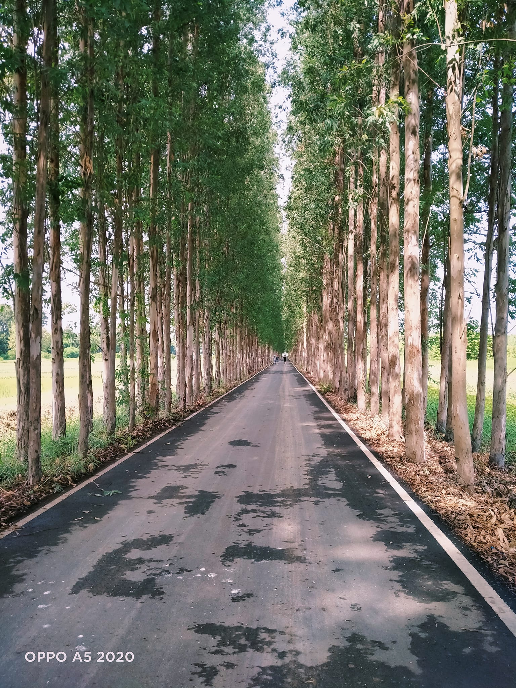
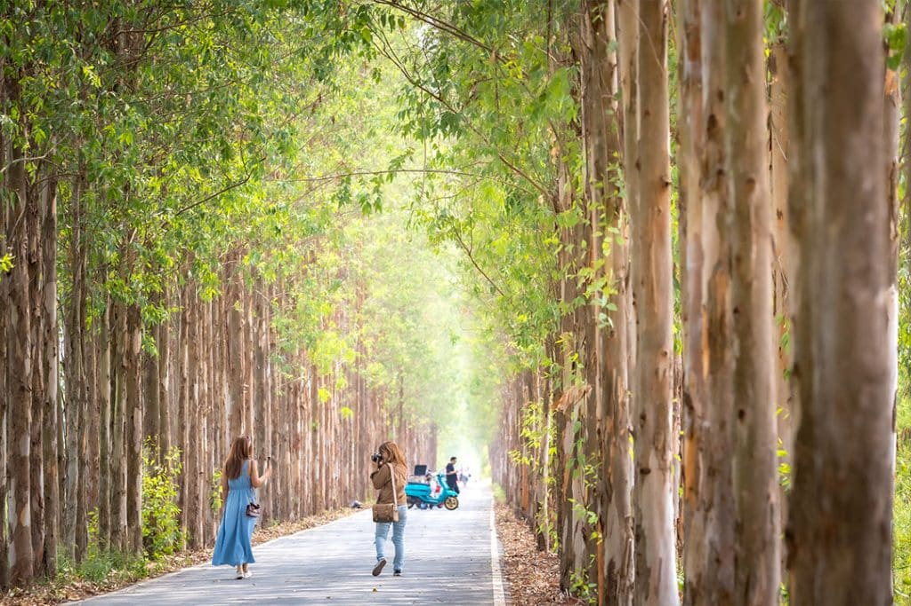
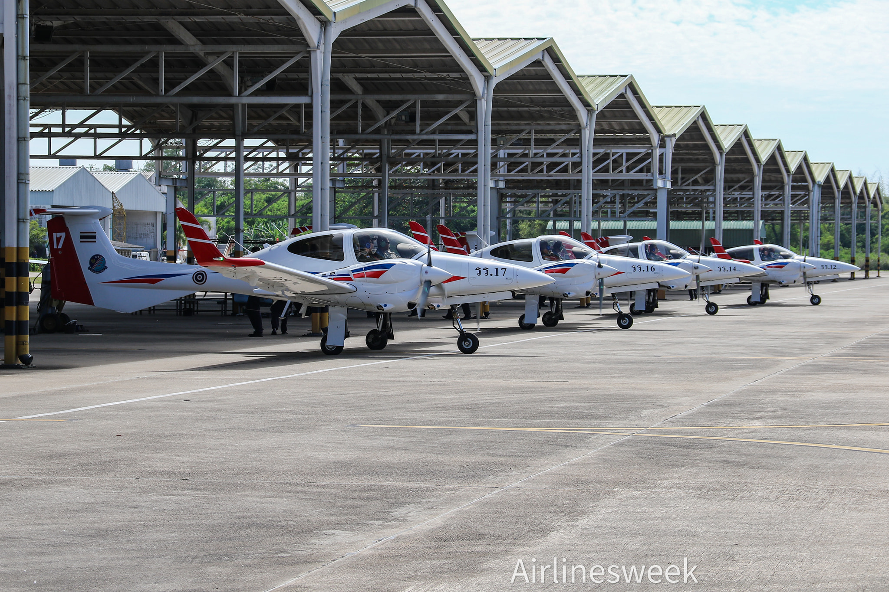
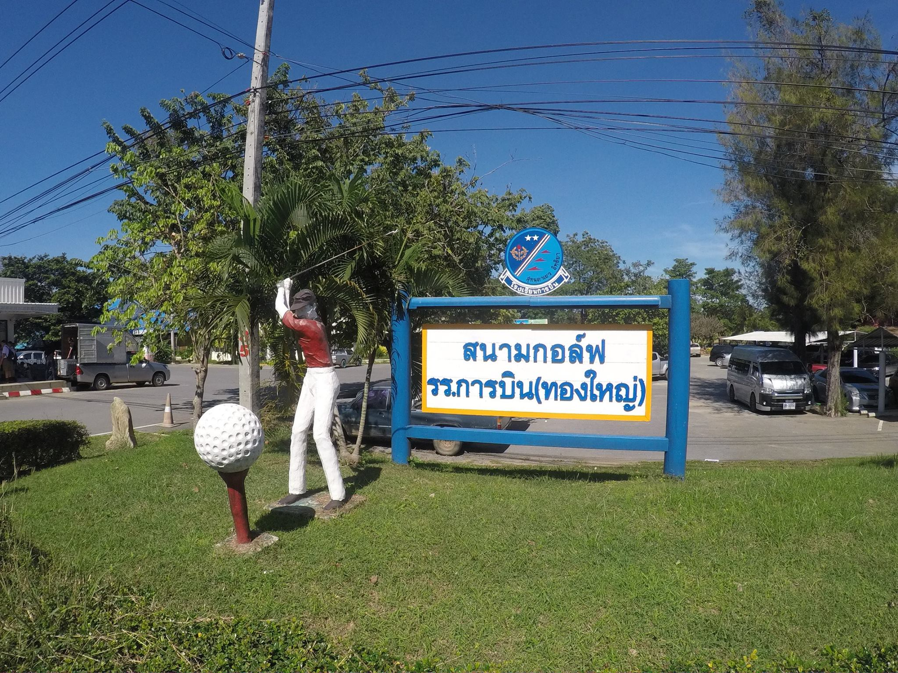
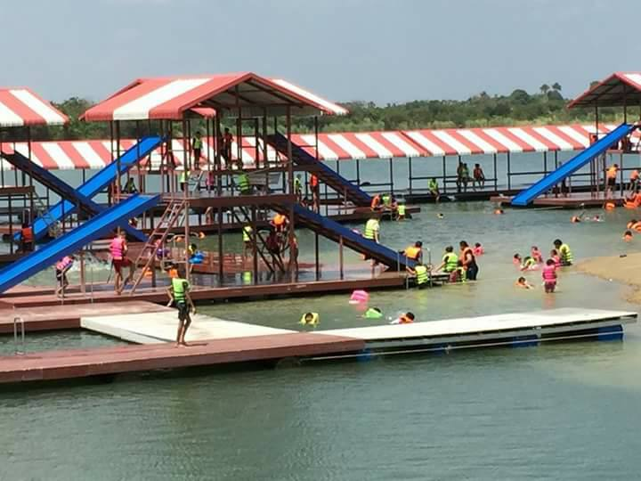
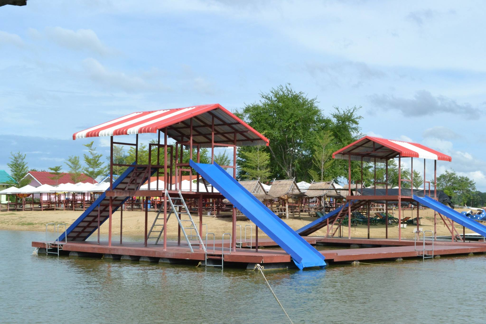
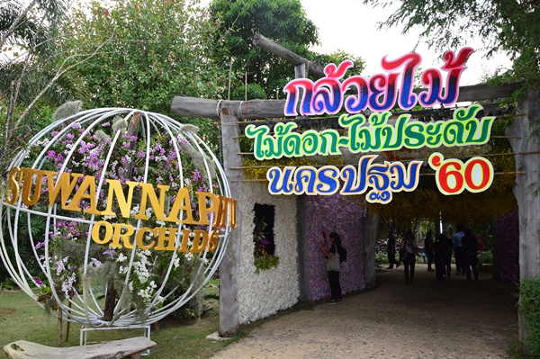
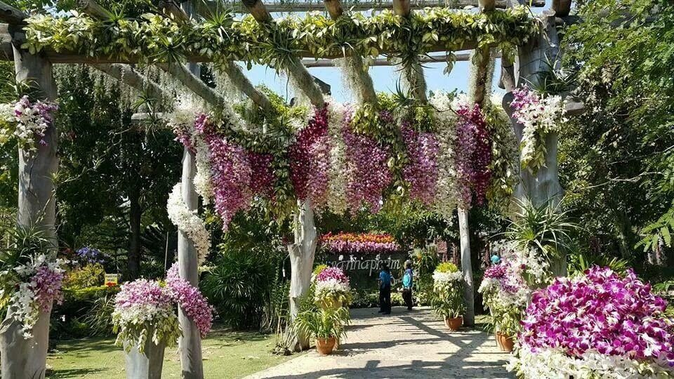

5 สถานที่น่าเที่ยวอำเภอกำแพงแสน

1.อุโมงค์ชมพูพันธุ์ทิพย์ มหาวิทยาลัยเกษตรศาสตร์ กำแพงแสน


จุดที่สามารถชมดอกชมพูพันธุ์ทิพย์ได้นั้น มีอยู่หลากหลายจุด
แต่จุดที่เป็นไฮไลต์จะอยู่บริเวณสองข้างถนนหน้าโรงเรียนสาธิตแห่งมหาวิทยาลัยเกษตรศาสตร์ วิทยาเขตกำแพงแสน
มีต้นชมพูพันธุ์ทิพย์มากกว่า 200 ต้น เรียงรายไปตามถนน ช่วงที่มีการบานของดอกชมพูพันธุ์ทิพย์ บริเวณนี้จะเป็นสีชมพูสวยงาม บรรยากาศโรแมนติกมาก
ที่อยู่: ตำบลกำแพงแสน อำเภอกำแพงแสน นครปฐม 73140
เวลาทำการ: ช่วงเวลาที่แนะนำในการมาถ่ายรูปคือช่วงเช้า (ไม่เกิน 10.30 น.) และช่วงเย็น (ไม่เกิน 18.30 น.) แสงจะสวยและไม่ร้อนเกินไป
Google Map: อุโมงค์ชมพูพันธุ์ทิพย์
2.อุโมงค์ยูคาลิปตัส (Eucalyptus Road Photo Spot)


อาจจะเรียกได้ว่าเป็นที่เที่ยวนครปฐมอันซีนก็ว่าได้ครับ กับ “อุโมงค์ยูคาลิปตัส”
อีกหนึ่งที่เที่ยวนครปฐม ที่สายคอนเทนต์ชอบถ่ายรูปต้องแวะ แอบซ่อนอยู่ใน มหาวิทยาลัยเกษตรศาสตร์ กำแพงแสน
เต็มไปด้วยต้นยูคาลิปตัสสูงใหญ่ 2 ข้างทาง บรรยากาศเย็นสบายและร่มรื่น ได้ถ่ายรูปเก๋ๆ แน่นอน หรือเดินเล่นชิลๆ พักผ่อนก็ยังได้
ที่อยู่: 654 ตำบลกำแพงแสน อำเภอกำแพงแสน จังหวัดนครปฐม
Google Map: อุโมงค์ยูคาลิปตัส
3.โรงเรียนการบิน กำแพงแสน


เป็นสถานที่ที่ทราบกันดีว่าเป็นสถาบันผลิตนักบินประจำการของกองทัพอากาศ
แต่ก็ได้มีการพัฒนาให้เป็นแหล่งท่องเที่ยวด้วย ด้วยการเปิดให้เข้าชมการฝึกบิน การทดลองบินในเครื่องช่วยฝึกบิน (Simulator)
มีสนามกอล์ฟให้บริการ พร้อมกับพื้นที่พักผ่อนอย่างสวนน้ำธรรมชาติ และกิจกรรมสุดสนุกอย่างเรือพาย เล่นเรือถีบ เจ็ตสกี
ที่อยู่: ถนน 14 Kra Tip, Kamphaeng Saen District, Nakhon Pathom 73180
สามารถสอบถามรายละเอียดเพิ่มเติมได้ที่ ส่วนกิจการพลเรือน โรงเรียนการบิน กำแพงแสน โทรศัพท์ 0 3438 3601-3
Google Map: โรงเรียนการบิน กำแพงแสน
4.สวนน้ำหนองกระทุ่ม


เป็นสวนน้ำในหนองน้ำธรรมชาติ พื้นที่กว้างขวาง มีการจัดสรรพื้นที่ให้เหมาะสมต่อการลงเล่นน้ำ
โดยทำเป็นพื้นที่หาดทรายยื่นออกไปในหนองน้ำ และมีแพเปียกขนาดใหญ่ให้นักท่องเที่ยวได้เข้าไปเล่นน้ำกันอย่างสนุกสนาน
ที่อยู่: 31/1 ม.1 ต.ทุ่งลูกนก อ.กำแพงแสน จ.นครปฐม 73140, Amphoe Kamphaeng Saen, Thailand, Nakhon Pathom
สามารถดูรายละเอียดเพิ่มเติมได้ที่ เฟซบุ๊กสวนน้ำหนองกระทุ่ม Nong Krathum WaterPark
Google Map: สวนน้ำหนองกระทุ่ม Nong Krathum WaterPark
5.สวนกล้วยไม้สุวรรณภูมิ ออร์คิดส์


เป็นสวนกล้วยไม้อันดับต้น ๆ ของเมืองนครปฐม ซึ่งในช่วงต้นปีจะมีการจัดงานแสดงสวนกล้วยไม้
โดยจะนำดอกกล้วยไม้หลากหลายสายพันธุ์และสีสันมาจัดตกแต่งรอบ ๆ สวนอย่างสวยงาม ให้นักท่องเที่ยวได้ถ่ายรูปกันอย่างใกล้ชิด
พร้อมทั้งยังมีร้านค้า ร้านอาหารให้บริการมากมาย
ที่อยู่: 54หมู่11 ต.หนองกระทุ่ม อ.กำแพงแสน จ.นครปฐม
สามารถดูรายละเอียดเพิ่มเติมได้ที่ เฟซบุ๊กสวนกล้วยไม้สุวรรณภูมิ ออร์คิดส์
Google Map: สวนกล้วยไม้สุวรรณภูมิ ออร์คิดส์

มหาวิทยาลัยศิลปากร
ชื่อกลุ่ม : Four